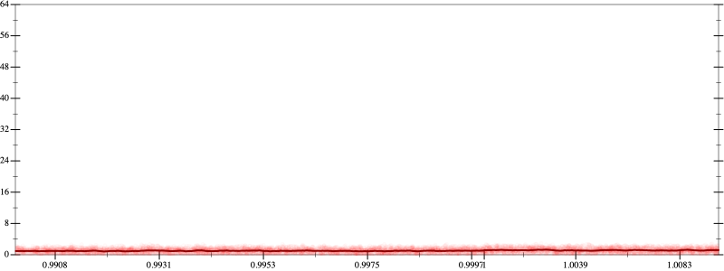
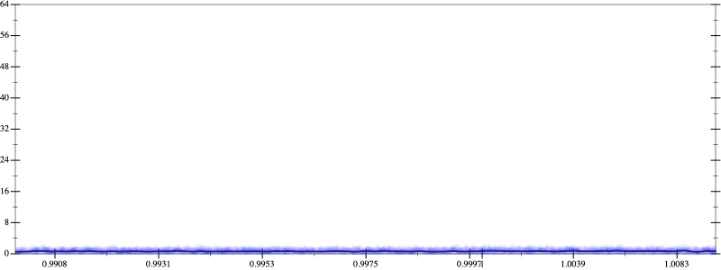
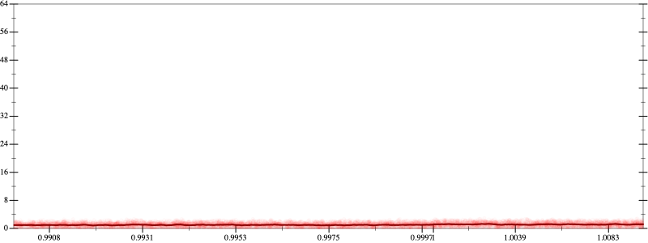
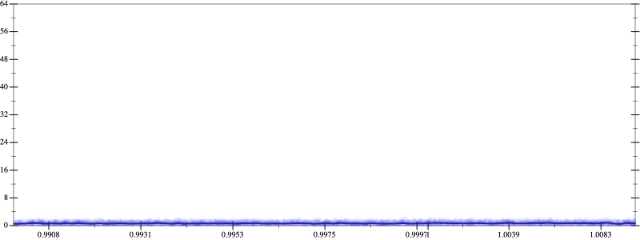

Initial program 1.0
\[\left(\left(1.0 + -3.0 \cdot x\right) + 1.5 \cdot \left(x \cdot x\right)\right) + -0.166667 \cdot \left(\left(x \cdot x\right) \cdot x\right)\]
- Using strategy
rm Applied associate-+l+1.0
\[\leadsto \color{blue}{\left(1.0 + \left(-3.0 \cdot x + 1.5 \cdot \left(x \cdot x\right)\right)\right)} + -0.166667 \cdot \left(\left(x \cdot x\right) \cdot x\right)\]
Applied simplify0.7
\[\leadsto \left(1.0 + \color{blue}{\left(-3.0 + 1.5 \cdot x\right) \cdot x}\right) + -0.166667 \cdot \left(\left(x \cdot x\right) \cdot x\right)\]
- Using strategy
rm Applied add-log-exp0.7
\[\leadsto \left(1.0 + \left(-3.0 + 1.5 \cdot x\right) \cdot x\right) + -0.166667 \cdot \color{blue}{\log \left(e^{\left(x \cdot x\right) \cdot x}\right)}\]
Applied simplify0.7
\[\leadsto \left(1.0 + \left(-3.0 + 1.5 \cdot x\right) \cdot x\right) + -0.166667 \cdot \log \color{blue}{\left(e^{{x}^{3}}\right)}\]
- Using strategy
rm Applied add-cbrt-cube0.7
\[\leadsto \left(1.0 + \left(-3.0 + 1.5 \cdot x\right) \cdot x\right) + -0.166667 \cdot \log \color{blue}{\left(\sqrt[3]{\left(e^{{x}^{3}} \cdot e^{{x}^{3}}\right) \cdot e^{{x}^{3}}}\right)}\]
Applied simplify0.6
\[\leadsto \left(1.0 + \left(-3.0 + 1.5 \cdot x\right) \cdot x\right) + -0.166667 \cdot \log \left(\sqrt[3]{\color{blue}{{\left(e^{x \cdot x}\right)}^{\left(\left(x + x\right) + x\right)}}}\right)\]
 
